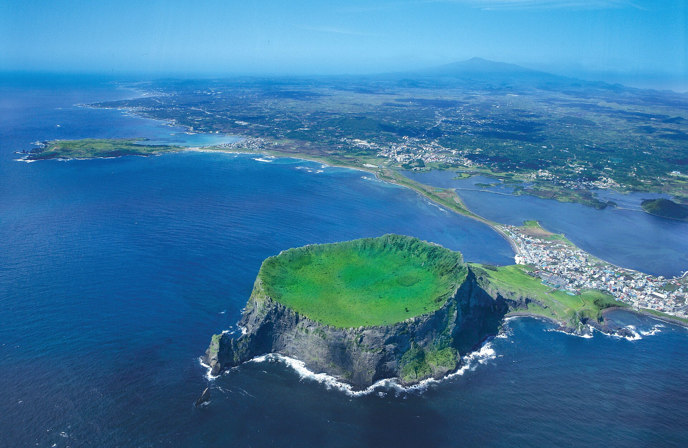

⏰ 今晚就要做的事：① 机票（免签也得直飞济州，别买经首尔的）② 包车（东线最抢手，旺季至少提前 3 天，Klook/KKday 或华人司机）③ 汉拿山徒步如要安排，官网预约名额有限，尽早约。
📌 数据口径：机票/酒店为飞猪 2026-09-28 实时查询（机票每人价、酒店每晚参考价，1间2人）；免签/门票/包车为 2025 年公开政策与攻略参考。国庆价格实时浮动，出发前以官方与 App 实付为准。韩国时间比北京快 1 小时（下文时间均为当地）。

城山日出峰 · 海上火山口
🎯 一句话结论
济州岛对中国个人游客免签 30 天（长期政策），护照直接走，不用办签证——这是相对韩国本土最大的优势。但必须直飞济州（北京每天最多 5 班直飞可选），经首尔转机就要韩国签证了。
动线极其简单：济州市连住 5 晚不搬行李，东线一天（火山口+牛岛）、西线一天（海岸+咖啡）、汉拿山或中文区一天、市区松弛一天——济州岛就一个岛，这是和舟山跳岛完全不同的节奏。
两人全程预算约 ¥15,000（中档），比舟山贵约 ¥3,000，大头在机票（¥8,234 起）；但酒店便宜（济州市 ¥380 档就很好）。
10 月的济州 16-21℃ 秋高气爽，是全年最佳旅行季；10 月初偶有台风尾巴，机票选白天班+行程留弹性更稳。
⚔️ 济州岛 vs 舟山 · 硬碰硬（媳妇菜单 PK 老杰菜单）
| 对比项 | 🌋 济州岛 | 🏝 舟山 |
|---|
| 手续 | 免签（材料备齐+边检可能问询） | 无任何手续 |
| 机票 2 人往返 | ¥8,234 - ¥9,672 | ¥5,072 |
| 直飞航班 | 每天最多 5 班可选（10:50-17:55 出发） | 每天仅 1 班（16:20 出发） |
| 住宿 5 晚（中档） | ≈¥1,900（更便宜） | ≈¥2,600 |
| 当地交通 | 靠包车 2 天（¥1,600）+巴士，中国驾照不能自驾 | 打车+船票，灵活便宜 |
| 核心体验 | 海上火山口、牛岛骑行、汉拿山、韩系咖啡、黑猪肉 | 南海观音礼佛、环海公路、东极岛果冻海、梭子蟹 |
| 海水 | 牛岛/涉地可支外海透蓝，概率高 | 近岸黄绿、东极外海蓝 |
| 语言/支付 | 韩语（中文标识多），现金+Visa 为主 | 无障碍，扫码走天下 |
| 10 月天气 | 16-21℃ 早晚凉，偶台风尾 | 19-24℃ 更舒适 |
| 2 人总预算（中档） | ≈¥15,000 | ≈¥12,000 |
| 一句话画像 | 出国的仪式感+韩系度假，折腾多一点 | 佛系松弛零门槛，省钱省心 |
💡 小欣的看法（可反驳）：想「出国的感觉」+ 咖啡馆拍照 + 不心疼预算 → 济州；想要礼佛+海鲜+松弛无手续 → 舟山。两个方案的动线设计都是「大本营不搬行李」，所以选哪个都轻松。
玩法图鉴 济州岛怎么玩：东线 / 西线 / 中线 / 市区
东线 · 世界自然遗产
城山日出峰UNESCO本次必去
🎫 约 2,000 韩元（≈¥10）⛰ 海拔 182m，台阶缓⏳ 2-3 小时
10 万年前海底火山喷发凝成的海上火山口，顶上是个绿草环盆——航拍看就是一张明信片。台阶好走，登顶看牛岛和东海，济州岛的封面景点，放 D2 早上人最少时去。
牛岛（Udo）本次重头戏
⛴ 城山港轮渡 15 分钟（往返约 ¥50/人）🛵 岛上租电动车环岛⏳ 半天
济州岛旁的小离岛，白色灯塔+草坡悬崖+花生冰淇淋。坐渡轮上岛租电动车沿海岸线环岛骑行，是济州最经典的情侣玩法——注意看好末班船时间，误了船要在岛上过夜。
汉拿山（Hallasan）体力好选
🎫 免门票📋 登山路线上需提前官网预约⏳ 御里牧路线约 5-6 小时
1947m 的韩国第一高峰，山顶白鹿潭火山口湖云雾缭绕。徒步是正经登山（5h+），适合平时有运动习惯的；不想爬就改中文区度假路线，山上路线名额有限要抢。
龙头海岸 & 山房山西线主打
🎫 龙头海岸约 2,000 韩元⏳ 半天串山房山
入海的龙头状绝壁，退潮时可以走到崖底看熔岩层理；旁边的山房山是济州地标圆锥山。西线一路是海岸散步路+悬崖咖啡，午后坐在崖边看海喝咖啡是济州度假的灵魂。
市区 · 烟火气
东门传统市场夜宵圣地
🌇 营业到晚上（夜宵友好）🦀 必吃：酱蟹、海鲜、橘子汁
济州最大的传统市场，酱蟹（간장게장）拌饭是一绝——生腌螃蟹浇在热米饭上「饭小偷」名不虚传；还有鲍鱼海鲜、烤鱿鱼、橘子冰沙。落地第一晚和最后采购都放这。
南线 · 度假区
中文旅游区 & 西归浦汉拿山 Plan B
🎫 柱状节理带约 2,000 韩元🏖 咸德/中文海水浴场
济州的度假酒店区：柱状节理带（六棱石柱海岸，火山鬼工）、天地渊瀑布、水上星球水族馆，海边散步路适合不爬山的一天。西归浦市区吃海女现捞海鲜。
🗺 推荐路线总览（6 天 5 晚 · 一站到底）
| 天 | 日期 | 主题 | 玩什么 |
|---|
| D1 | 10/2 五 | 抵达 | 17:55 起飞 → 21:35 落济州 → 入住 → 东门市场夜宵 |
| D2 | 10/3 六 | 东线包车 | 城山日出峰登顶 → 涉地可支 → 牛岛骑行（末班船前回）→ 黑猪肉 |
| D3 | 10/4 日 | 西线包车 | 龙头海岸 → 山房山 → 汉潭海岸散步路 → 涯月咖啡看日落 |
| D4 | 10/5 一 | 中线/南线 | 汉拿山徒步（需预约）或 中文区：柱状节理带+天地渊瀑布 |
| D5 | 10/6 二 | 市区松弛 | 龙头岩 → 东门市场再战 → 免税店/莲洞 → 新济州烤肉收官 |
| D6 | 10/7 三 | 返程 | 睡醒 → 莲洞买手信 → 22:35 直飞 → 23:55 落地大兴 |
东线/西线各包车一天（两日串起全部精华），其余日子巴士+打车即可。回程特意选了 22:35 起飞——最后一天完整不赶。若买的是上午班（大韩 KE2066），D5/D6 内容对调压缩。
推荐组合（2 人往返直飞 · 省钱版）¥8,234舒适版 ¥9,672
✈️ 北京 ⇄ 济州：直飞班次多，选得起
去程 5 班直飞（10:50-17:55 出发）、回程 4 班直飞（11:45-22:40 出发）——比舟山「每天一班没得挑」舒服。
省钱组合：去 10/2 春秋 9C7205（大兴 17:55→21:35）+ 回 10/7 春秋 9C7206（济州 22:35→大兴 23:55）= ¥4,117/人，两人 ¥8,234。去程晚到但第一晚正好逛东门夜市，回程最后一天全天在岛上。
舒适组合：去 10/2 济州航空 7C8136（大兴 14:30→17:55）¥2,292 + 回同上 = ¥4,836/人，两人 ¥9,672。落地早、当晚能早睡，第二天东线更从容。
预算宽裕看国航 CA711/CA712（¥2,979/¥4,040，首都机场出发）；大韩 KE2066 上午 10:50 走最从容但 ¥3,767 起贵不少。
⚠️ 免签红线：必须直飞济州。飞猪上便宜的中转组合（经青岛/南京/首尔）都需要韩国签证或过境风险，别贪便宜。
直飞班次表 飞猪 2026-09-28 实查 · 价格实时浮动
| 日期 | 航班 | 时间 | 时长 | 单价/人 |
|---|
| 10/2 五 | 大韩 KE2066 | 首都 10:50 → 济州 14:25 | 2h35m | ¥3,767 |
| 10/2 五 | 济州航空 7C8136 舒适版推荐 | 大兴 14:30 → 济州 17:55 | 2h25m | ¥2,292 |
| 10/2 五 | 哈恩 H19776 | 大兴 14:30 → 济州 17:55 | 2h25m | ¥2,597 |
| 10/2 五 | 国航 CA711 | 首都 17:30 → 济州 21:15 | 2h45m | ¥2,979 |
| 10/2 五 | 春秋 9C7205 省钱版推荐 | 大兴 17:55 → 济州 21:35 | 2h40m | ¥1,573 |
| 10/7 三 | 济州航空 7C8135 | 济州 11:45 → 大兴 13:30 | 2h45m | ¥4,585 |
| 10/7 三 | 国航 CA712 | 济州 22:05 → 首都 23:30 | 2h25m | ¥4,040 |
| 10/7 三 | 春秋 9C7206 推荐 · 最后一天玩满 | 济州 22:35 → 大兴 23:55 | 2h20m | ¥2,544 |
| 10/7 三 | 济州航空 7C8133 | 济州 22:40 → 首都 01:10+1 | 3h30m | ¥2,480 |
💡 买票提醒
春秋/济州航空/哈恩都是廉航：托运行李下单时另购，两人合买 20kg 够用（回程要装手信就买够）。
回程别选 7C8133——01:10 才落地北京，酒店接驳麻烦；9C7206 的 23:55 落大兴最舒服。
距出发 4 天，班次多但国庆票也在涨，看中就锁；飞猪/携程对比含税实付。
5 晚住宿策略济州市连住不搬行李约 ¥1,600-2,600 合计 · 比舟山还便宜
🏨 怎么住最聪明
济州市（旧济州/莲洞一带）连住 5 晚：东线西线包车各一天往返（车程 1-1.5h），市区吃饭夜宵步行可达，去机场 15 分钟——济州岛就一个岛，没必要换酒店。
国庆档济州市高档型 ¥380-754 就有很好的选择，比朱家尖还便宜；想体验度假村可挪 1 晚去西归浦 KAL（¥770）或中文区。
订免费取消档；韩国酒店双床房多，下单备注大床（ honeymoon bed ）不保证，做好分床心理准备😄
济州市 · 大本营 10/2-10/7 连住 5 晚 · 飞猪 10/2-10/4 实查价
济州中心城酒店 性价比之选
⭐ 高档型📍 机场旁莲洞商圈🚶 步行可到商业街
¥380 档住到高档型，位置在机场/莲洞/东门三点中间，落地和返程都省心。
济州贝斯特韦斯特酒店（Best Western）国际连锁稳
⭐ 高档型📍 济州市
国际连锁出品稳定，适合对床品早餐有要求的双人游。
济州格洛斯特酒店 品质升级
⭐ 高档型📍 Sammu-ro 酒店区
新济州酒店区里口碑不错的一家，房间大、隔音好。
济州奇迹酒店 极简省钱
⭐ 舒适型📍 新济州
¥154 的国庆价有点离谱——适合「酒店只用来睡觉」的组合，省下的钱吃两顿黑猪肉。
济州空中花园 1 号酒店（2025 年装修）新鲜出炉
⭐ 高档型📍 机场旁
去年新装修，设施新；贵一点但住得舒服，适合把住宿当体验的一部分。
西归浦 · 可选拆 1 晚 若想体验南部度假区
西归浦 KAL 酒店 度假感之选
⭐ 豪华型 · 大韩航空系📍 西归浦市区/海边
老牌度假酒店，园景海景都好，离天地渊瀑布近。玩法：D4 玩中文区时住西归浦 1 晚，行李仍寄存大本营，轻装。
济州西归浦肯尼酒店 经济替代
⭐ 舒适型📍 西归浦市区
西归浦的省钱选项，¥312 档，海边步行可达。
🧭 节奏设计
济州岛景点分散，东线西线各包车一天是自由行黄金解法（2 人包车 ¥700-900/天，比拼团自由）；其余日子靠巴士+打车慢逛。
每天一个主题：抵达缓冲 → 东线重头 → 西线咖啡 → 山或海 → 市区松弛 → 返程。晚上都回济州市，夜宵不重样。
D110/2 周五 · 北京→济州 · 住济州市
15:00大兴机场集合（国际航班提前 2.5h；出发前 72h 内填好韩国电子入境卡 e-card）
17:559C7205 直飞 → 21:35 落济州（当地时间，比北京快 1h）
22:00入境（免签通道：护照+往返机票单+酒店单备好）→ 机场巴士/打车 15 分钟到酒店
23:00东门市场夜宵：酱蟹拌饭/烤鱿鱼/鲍鱼串（市场部分摊位营业到深夜；若已收摊，便利店解决+明天补）
💡 买了舒适版 7C8136（17:55 落地）的话：多出一个完整傍晚，加龙头岩看日落。
D210/3 周六 · 东线包车日 · 住济州市
08:30包车出发（司机提前 3 天订好，约 1h15m 车程）
09:30城山日出峰登顶：182m 缓台阶，火山口绿盆+眺望牛岛（早去避人潮）
11:30涉地可支海岸散步路：草原+礁石+咖啡馆，随手出片
12:30城山港午餐：海女现捞海鲜锅/海鲜面
14:00牛岛：轮渡 15 分钟上岛 → 租电动车环岛骑行 2-3h（花生冰淇淋+白沙滩+灯塔）
17:30看好末班船（旺季约 17:30-18:30，以码头当日公告为准）返回城山港
19:30回济州市，晚餐 黑猪肉烤肉（济州名物，两人一斤起）
🌊 风浪警报：牛岛轮渡大风天停航——若停航，东线改为「日出峰+涉地可支+水族馆」，或与 D3 西线对调。
D310/4 周日 · 西线包车日 · 住济州市
09:00包车出发（约 1h）
10:00龙头海岸：入海绝壁步道（退潮时崖底视角最震撼）
11:30山房山：济州地标圆锥山，山脚寺院+蜂窝岩（时间富余可上）
13:00西南部午餐：刀削面/烤肉
15:00汉潭海岸散步路或涯月海岸公路：悬崖咖啡馆（K 先生/GD 同款打卡带）看海喝咖啡
18:30涯月看日落 → 回济州市，晚餐随意（市场/炸鸡啤酒）
💡 西线节奏比东线慢，主打「海岸+咖啡+日落」的度假感——媳妇要的韩系氛围照都在今天。
D410/5 周一 · 中线/南线 · 住济州市
方案A汉拿山御里牧→灵实穿越（约 5-6h，需提前官网预约名额，两个体力好就上；云海+白鹿潭火山口湖）
方案B中文旅游区慢玩：柱状节理带（六棱石柱海岸）→ 天地渊瀑布 → 水上星球/海岸散步路 → 西归浦海女海鲜午餐
18:00回济州市（方案B 也可顺路体验西归浦 KAL 一晚，行李寄存大本营轻装去）
⛰ 汉拿山是正经登山：防滑鞋+防风外套+雨具必备，10 月山顶约 5-8℃；不常运动选方案 B 完全不亏。
D510/6 周二 · 市区松弛日 · 住济州市
09:30睡醒早餐 → 龙头岩（市区海边龙头熔岩，20 分钟打卡）
11:00东门市场二刷：酱蟹拌饭正餐+伴手礼（橘子巧克力/蜂蜜/济州柑橘护手霜）
15:00莲洞商业街/新罗免税店（护肤品化妆品补货，免签游客可退税）
18:30收官晚餐：新济州 烤黑猪肉 或 烤整只羊排/鲍鱼烤肉，配上济州橘子米酒
💡 今天无车依赖，巴士+步行全搞定——把体力留给最后一天之前的自由掌控。
D610/7 周三 · 返程 · 当天 23:55 到北京
09:30睡到自然醒，退房寄存行李
10:30莲洞最后逛/咖啡馆收尾（济州咖啡便宜好喝，值得最后一杯）
14:00午餐 → 取行李 → 机场（国际线提前 2.5h，退税先办）
22:359C7206 直飞 → 23:55 落地北京大兴，打车回家 🏠
✈️ 特意选的深夜班：最后一天玩满 12 小时。若你最终买了上午班 7C8135（11:45 飞），今天改成 09:00 直奔机场，D5 内容压缩进 D4 晚上。
2 人 6 天 5 晚 · 中档总预算≈ ¥15,000区间 ¥14,000-16,500
💰 账本（2 人合计）
| 项目 | 明细 | 金额 |
|---|
| ✈️ 机票往返 | 省钱版 9C7205+9C7206 各 ×2（舒适版 +¥1,438） | ¥8,234 |
| 🏨 住宿 5 晚 | 济州市中档 ¥380/晚 ×5 | ≈ ¥1,900 |
| 🚙 包车 2 天 | 东线+西线，¥800/天 中值（¥700-1,200 区间） | ≈ ¥1,600 |
| 🍖 吃 | 黑猪肉×2、酱蟹、海鲜锅、涯月咖啡、市场小吃 | ≈ ¥2,200 |
| 🎫 门票船票 | 日出峰+牛岛船票电动车+柱状节理等（韩元现付） | ≈ ¥500 |
| 🚌 当地交通 | 机场巴士/出租车/T-money 充值 | ≈ ¥600 |
| 🛍 手信购物 | 免税店+市场伴手礼（弹性最大） | ≈ ¥1,000 |
| 合计 | 按中档口径 | ≈ ¥15,000 |
🎚 省钱/升级开关
省钱版（≈¥13,000）：住宿用奇迹酒店（-¥1,100）、不包车全巴士（-¥1,600 但东线耗时翻倍）、不购物。
升级版（≈¥18,000+）：去程换 7C8136（+¥719/人）、住宿升格洛斯特（+¥1,900）、D4 晚西归浦 KAL（+¥770）。
大头是机票（55%）——廉航行李额度提前买，比机场现场便宜。
对比：舟山中档 ¥12,000 —— 济州贵出的 ¥3,000 就是「出国仪式感」的单价😄
⏰ 抢票时间线（照着做就行）
今天 9/28锁机票（省钱或舒适组合）+ 酒店免费取消档 + 包车预订单（东线最抢手，Klook/KKday 或小红书华人司机）
出发前 72h填韩国电子入境卡 e-card（每人一份，免费，谨防山寨收费网站）
尽早若 D4 走汉拿山：官网预约登山名额（御里牧路线名额有限）
10/1查韩国气象厅 weather.go.kr 济州预报+台风动态（10 月初偶有台风尾影响航班）
出发当天护照（有效期 6 个月+）+ 往返机票单 + 酒店单 + e-card 截图，截图存手机
🛂 免签入境要点（重要）
济州岛对中国个人游客免签停留 30 天（长期政策）；仅限济州岛内，去首尔要另办韩国签证。
必须直飞济州：经韩国本土中转/仁川入境需韩国签证，买票时看清经停。
备齐三件套：护照原件 + 往返机票单 + 酒店订单，另填 e-card。免签 ≠ 无条件入境，边检可能简单问询（行程/回程），材料齐全、如实回答即可。
两人同行（非单人）+ 材料齐全，过往拒入风险低；不用过度紧张但别裸奔。
🚙 交通要点（不能自驾！）
中国驾照在韩国不能开车（未加入相关公约互认）——别租车，主用「包车 2 天 + 巴士 + 打车」。
包车走 Klook/KKday 比价，或小红书/背包客栈找华人司机直联（通常便宜 10-20%），旺季至少提前 3 天，8-10h 约 ¥700-1,200/车。
市内巴士 550-600 韩元起，机场便利店买 T-money 卡充值通用；打车起步约 4,800 韩元。
机场↔济州市区仅 15 分钟车程，比国内很多机场进城还近。
🌤 天气与穿衣（10 月上旬济州）
16-21℃ 秋高气爽，是全年最佳旅行季；早晚凉，防风外套必备（济州风大，体感更凉）。
10 月初偶有台风尾影响航班与轮渡——出发前一周盯韩国气象厅；行程已留对调弹性。
汉拿山山顶约 5-8℃，走 A 方案要加厚外套+防滑鞋。
🍖 吃喝与实用
必吃清单：黑猪肉烤肉、酱蟹拌饭（饭小偷）、海女现捞海鲜、鲍鱼石锅饭、橘子冰淇淋；济州橘子制品是手信 C 位。
支付：韩国现金+Visa/万事达为主，换 30-50 万韩元现金（≈¥1,600-2,600）备用；支付宝在部分连锁店可用但不能依赖。
插头德标圆孔，带转换插头；韩国时间快 1 小时（手机自动同步）。
语言：旅游区中文标识多+翻译 APP（Papago）足够；便利店/市场英语手势通用。
济州咖啡性价比高（¥25-40 一杯好喝），涯月/汉潭的悬崖咖啡馆记得提前看营业时间。
📋 数据与口径说明
机票/酒店：飞猪 2026-09-28 实查（价格实时浮动）。免签政策：2025 年公开报道与使馆信息整理，出行前以中国驻济州总领馆/韩国官方最新口径为准。门票/包车价格为 2025 年参考值（韩元现付为主），以现场/平台实付为准。牛岛轮渡与汉拿山预约以官方当日公告为准。